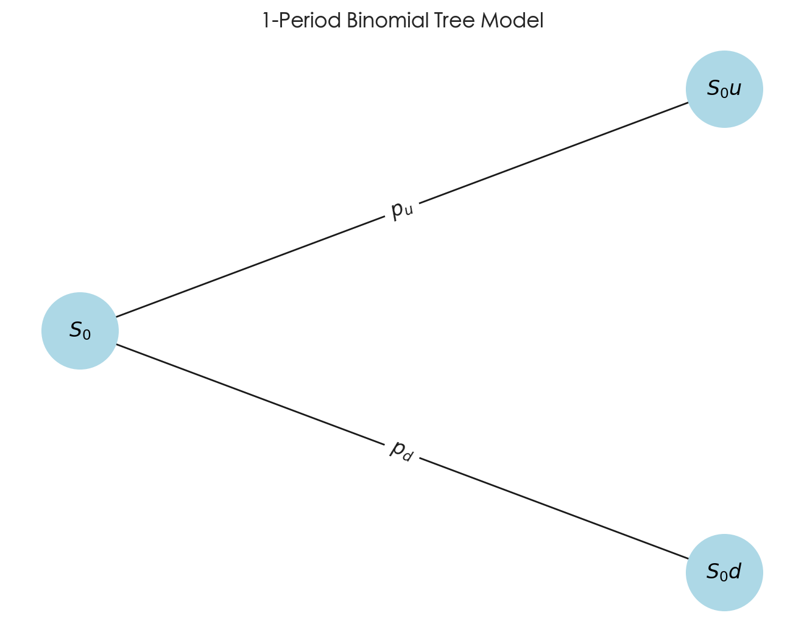
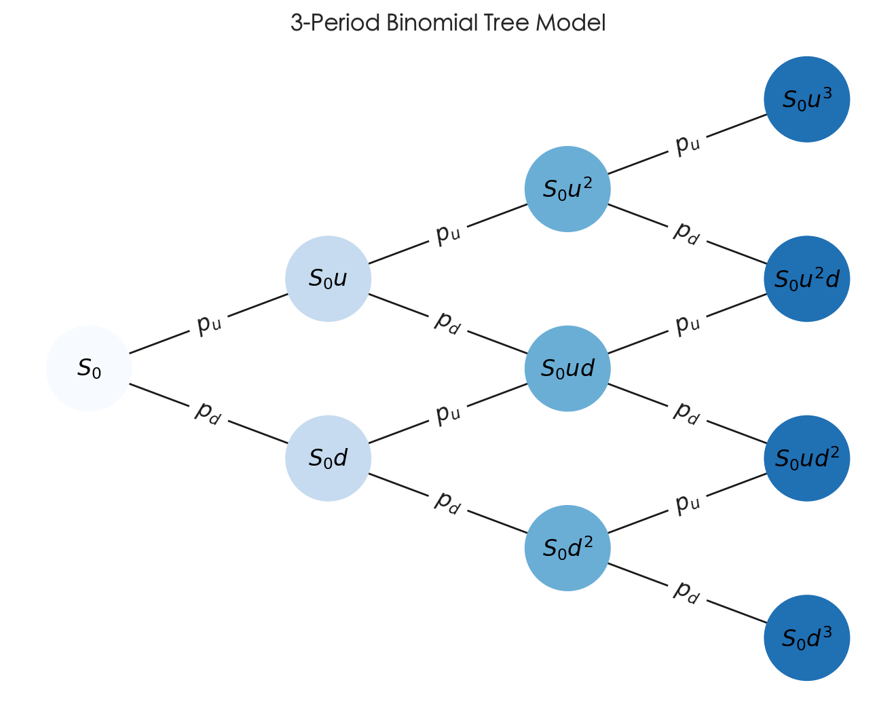
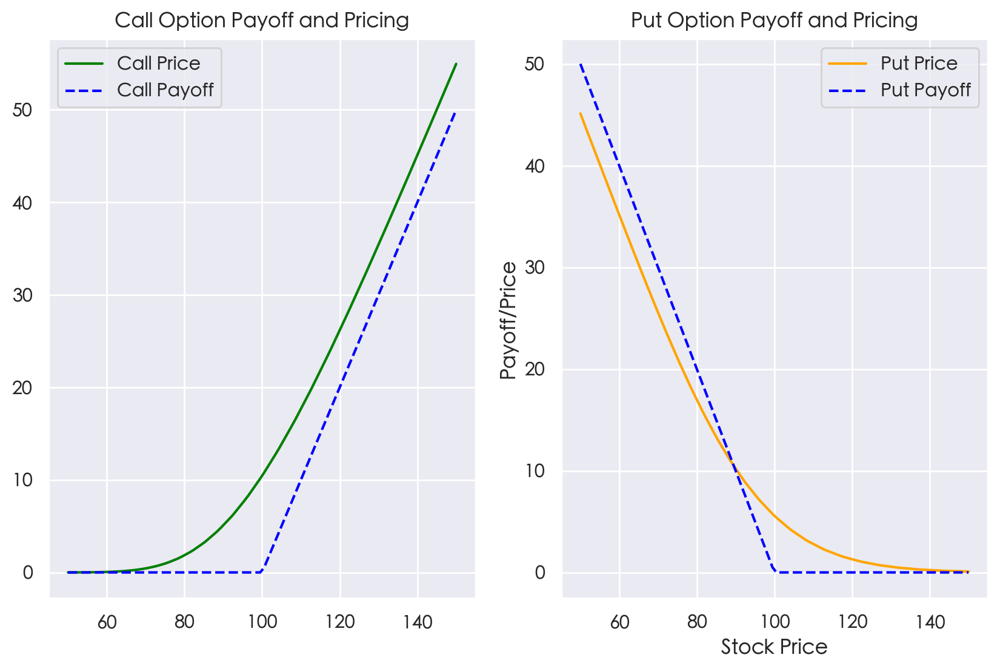
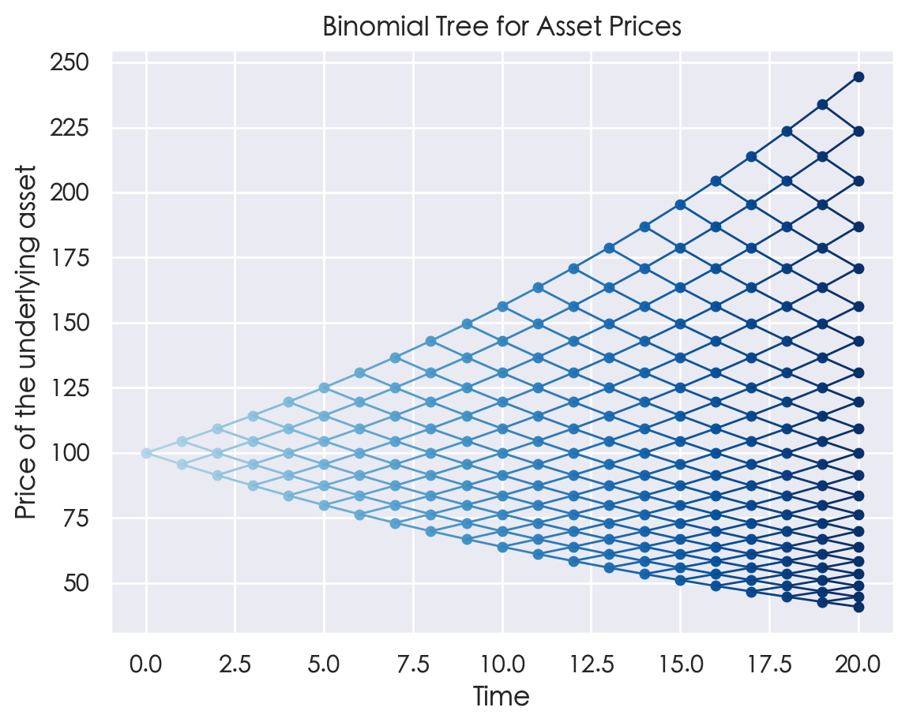
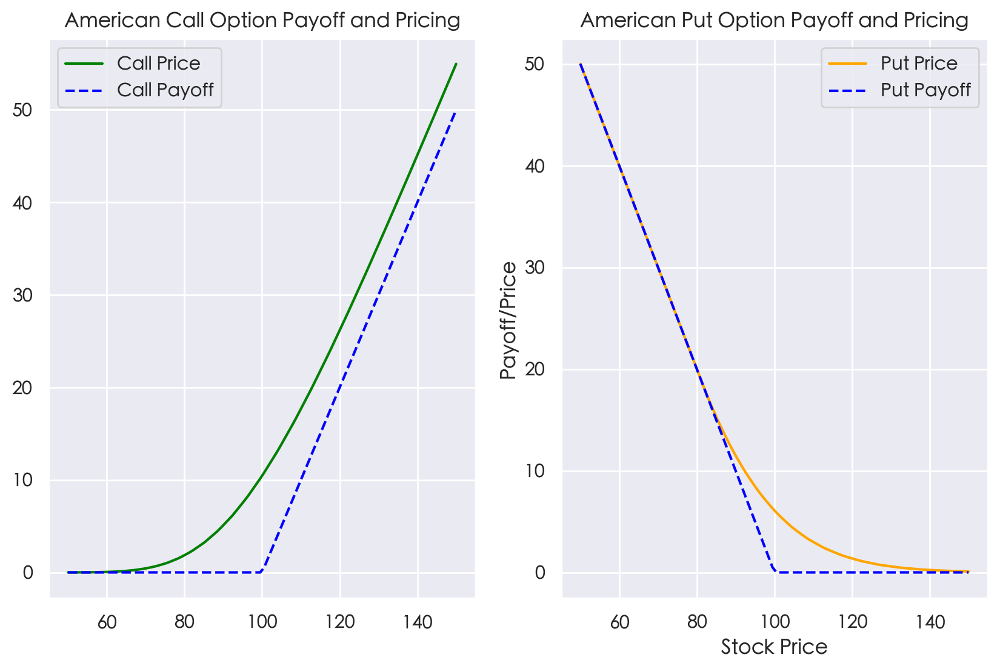
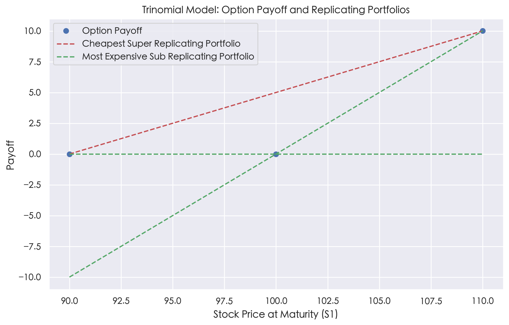

Discrete Time Models
In this chapter, we study how to price options in discrete-time market models. We cover:
- The single-period binomial model,
- The multi-period binomial model and its Cox–Ross–Rubinstein limit,
- Discrete-time pricing, bounds, and early exercise for American options,
- The trinomial model and market incompleteness,
- The Fundamental Theorems of Asset Pricing in discrete time.
2.1 Single-Period Binomial Model
A portfolio is a combination of holdings in the traded assets of the market. Suppose an investor holds \(\alpha\) units of the money market account and \(\beta\) shares of the stock. The portfolio is represented by the vector \(h = (\alpha, \beta) \in \R^2\), and its value at time \(t\) is
\[ V_t^h = \alpha B_t + \beta S_t. \]Consider a single-period market with two dates: \(t = 0\) (today) and \(t = T\) (maturity). Funds may be deposited in or borrowed from the bank at a constant continuously compounded risk-free rate \(r\), or invested in a risky stock. One unit of the money market account has initial value \(B_0 = 1\) and terminal value \(B_T = e^{rT}\), so investing \(y\) dollars in the bank at time \(0\) yields \(y e^{rT}\) at time \(T\).
The stock has initial price \(S_0 = s > 0\) and terminal price \(S_T = s \cdot X\), where
\[ X = \begin{cases} u & \text{with probability } p_u, \\ d & \text{with probability } p_d, \end{cases} \]with \(0 < d < u\), \(p_u, p_d > 0\), and \(p_u + p_d = 1\). The single-period tree is shown in Figure 2.1.

First, we recall the no-arbitrage assumption in this setting. An arbitrage portfolio is a portfolio \(h \in \R^2\) such that
- \(V_0^h = 0\),
- \(V_T^h \ge 0\) with probability \(1\),
- \(\Prob(V_T^h > 0) > 0\).
We assume throughout that the market is arbitrage-free, meaning that no arbitrage portfolio exists.
Assume that \(V_T^{h^*} \ge V_T^h\) with probability \(1\). Then, in the absence of arbitrage, \(V_0^{h^*} \ge V_0^h\).
Consider the portfolio \(\tilde{h} = h^* - h - \bigl(V_0^{h^*} - V_0^h,\, 0\bigr)\), which adjusts the money market holding so that its initial value is zero. Since \(B_0 = 1\) and \(B_T = e^{rT}\), we have
\[ V_0^{\tilde{h}} = 0, \qquad V_T^{\tilde{h}} = V_T^{h^*} - V_T^h - \bigl(V_0^{h^*} - V_0^h\bigr) e^{rT}. \]If \(V_0^{h^*} < V_0^h\), then \(V_T^{\tilde{h}} \ge -\bigl(V_0^{h^*} - V_0^h\bigr) e^{rT} > 0\) with probability \(1\), so \(\tilde{h}\) is an arbitrage portfolio, contradicting the no-arbitrage assumption. Therefore, \(V_0^{h^*} \ge V_0^h\). ◻
If two portfolios have the same terminal payoff at time \(T\) (that is, \(V_T^{h^*} = V_T^h\) with probability \(1\)), then in the absence of arbitrage they must have the same price at time \(0\): \(V_0^{h^*} = V_0^h\).
Applying Proposition 2.1 to both \(V_T^{h^*} \ge V_T^h\) and \(V_T^h \ge V_T^{h^*}\) yields \(V_0^{h^*} \ge V_0^h\) and \(V_0^h \ge V_0^{h^*}\), whence \(V_0^{h^*} = V_0^h\). ◻
As an immediate application, consider a portfolio that is long one European call option, short one share of the stock, and long \(K e^{-rT}\) units of the money market account. Its initial value is \(C(S_0, 0) - S_0 + K e^{-rT}\), and its terminal payoff is \((S_T - K)^+ - S_T + K = (K - S_T)^+\), which matches the terminal payoff of a European put option with the same strike \(K\) and maturity \(T\). By the Law of One Price (Corollary 2.1), we recover put–call parity at any time \(t \in [0, T]\).
In an arbitrage-free market without dividends and with a constant continuously compounded risk-free rate \(r\), European call and put options with common strike \(K\) and maturity \(T\) satisfy
\[ C(S_t, t) - P(S_t, t) = S_t - K e^{-r(T-t)} \qquad \text{for all } 0 \le t \le T. \]We next characterize when the single-period binomial model is arbitrage-free.
The single-period binomial model (with \(S_0 > 0\), \(0 < d < u\), and \(p_u, p_d > 0\)) is arbitrage-free if and only if
\[ d < e^{rT} < u. \](\(\Rightarrow\)) Consider the portfolio \(h = (-S_0, 1)\), which has initial value \(V_0^h = -S_0 \cdot 1 + 1 \cdot S_0 = 0\) and terminal value
\[ V_T^h = \begin{cases} S_0 (u - e^{rT}) & \text{with probability } p_u, \\ S_0 (d - e^{rT}) & \text{with probability } p_d. \end{cases} \]If \(e^{rT} \le d < u\), then \(V_T^h \ge 0\) in both states and \(V_T^h > 0\) in the up state (which has probability \(p_u > 0\)), so \(h\) is an arbitrage portfolio. Similarly, if \(d < u \le e^{rT}\), then \(-h = (S_0, -1)\) is an arbitrage portfolio. Both cases are excluded by the absence of arbitrage, hence \(d < e^{rT} < u\).
(\(\Leftarrow\)) Conversely, assume \(d < e^{rT} < u\), and let \(h = (\alpha, \beta)\) be any portfolio with \(V_0^h = \alpha + \beta S_0 = 0\). Substituting \(\alpha = -\beta S_0\) gives
\[ V_T^h = \begin{cases} \beta S_0 (u - e^{rT}) & \text{with probability } p_u, \\ \beta S_0 (d - e^{rT}) & \text{with probability } p_d. \end{cases} \]Since \(u - e^{rT} > 0\), \(d - e^{rT} < 0\), and \(S_0 > 0\), whenever \(\beta > 0\) we have \(V_T^h < 0\) in the down state (which occurs with probability \(p_d > 0\)); whenever \(\beta < 0\) we have \(V_T^h < 0\) in the up state (which occurs with probability \(p_u > 0\)); and if \(\beta = 0\) then \(V_T^h \equiv 0\). Thus no portfolio \(h\) can be an arbitrage portfolio. ◻
The economic intuition behind Theorem 2.2 is transparent:
- If \(d \ge e^{rT}\), one can borrow \(S_0\) from the bank at time \(0\) to buy the stock. At time \(T\), even in the worst case the stock is worth \(d S_0 \ge S_0 e^{rT}\), covering the debt while yielding a strictly positive profit in the up state.
- If \(u \le e^{rT}\), one can short-sell the stock at time \(0\) and deposit the proceeds \(S_0\) in the bank. At time \(T\), even in the worst case the bank account holds \(S_0 e^{rT} \ge u S_0\), covering the short position while yielding a strictly positive profit in the down state.
Now consider a derivative with terminal payoff \(\varphi(S_T)\). A portfolio \(h = (\alpha, \beta)\) replicates \(\varphi(S_T)\) if \(V_T^h = \varphi(S_T)\) in every state, i.e.,
\[\begin{aligned} \alpha e^{rT} + \beta S_0 u &= \varphi(S_0 u), \\ \alpha e^{rT} + \beta S_0 d &= \varphi(S_0 d). \end{aligned}\]Since \(u \neq d\) and \(S_0 > 0\), this linear system has the unique solution
\[\begin{aligned} \alpha &= e^{-rT} \frac{u \varphi(S_0 d) - d \varphi(S_0 u)}{u - d}, \\ \beta &= \frac{\varphi(S_0 u) - \varphi(S_0 d)}{S_0 (u - d)}. \end{aligned}\]By the Law of One Price (Corollary 2.1), the unique no-arbitrage price of the derivative at \(t = 0\) is the initial value of the replicating portfolio:
\[ V_0^h = \alpha + \beta S_0 = e^{-rT} \left[ \frac{e^{rT} - d}{u - d}\,\varphi(S_0 u) + \frac{u - e^{rT}}{u - d}\,\varphi(S_0 d) \right]. \]Define
\[ q_u := \frac{e^{rT} - d}{u - d}, \qquad q_d := \frac{u - e^{rT}}{u - d} = 1 - q_u. \]Under the no-arbitrage condition \(d < e^{rT} < u\), both \(q_u\) and \(q_d\) lie strictly in \((0, 1)\) and sum to \(1\). We therefore define a probability measure \(\Q\) by \(\Q(S_T = S_0 u) = q_u\) and \(\Q(S_T = S_0 d) = q_d\).
Assume the single-period binomial model is arbitrage-free (\(d < e^{rT} < u\)). Then the unique no-arbitrage price at time \(t = 0\) of any derivative with terminal payoff \(\varphi(S_T)\) at time \(T\) is
\[ V(0) = e^{-rT} \E^{\Q}\bigl[\varphi(S_T)\bigr]. \]Several key observations follow from Theorem 2.3:
- The real-world probabilities \(p_u\) and \(p_d\) do not enter the pricing formula (provided they are strictly positive); only the risk-neutral measure \(\Q\) matters.
- Under \(\Q\), the discounted stock price is preserved in expectation: \(S_0 = e^{-rT} \E^{\Q}[S_T]\). A probability measure with this property is called a risk-neutral probability measure (and it is unique in the binomial model).
- The no-arbitrage price of any derivative is the discounted expectation of its payoff under the risk-neutral measure \(\Q\).
Consider a single-period binomial model with \(S_0 = 100\), \(u = 1.2\), \(d = 0.8\), \(r = 5\%\), and \(T = 1\) year, and suppose we wish to price an at-the-money European call option with strike \(K = 100\). Since \(e^{rT} = e^{0.05} \approx 1.0513\) satisfies \(d = 0.8 < 1.0513 < 1.2 = u\), the market is arbitrage-free.
The terminal stock prices are \(S_u = 120\) and \(S_d = 80\), yielding option payoffs \(C_u = (120 - 100)^+ = 20\) and \(C_d = (80 - 100)^+ = 0\). The unique risk-neutral probabilities are
\[ q_u = \frac{e^{0.05} - 0.8}{1.2 - 0.8} \approx 0.6282, \qquad q_d = 1 - q_u \approx 0.3718. \]Solving for the replicating portfolio \(h = (\alpha, \beta)\) gives
\[\begin{aligned} \beta &= \frac{C_u - C_d}{S_u - S_d} = \frac{20 - 0}{120 - 80} = 0.5000, \\ \alpha &= e^{-0.05}\,\frac{u C_d - d C_u}{u - d} = e^{-0.05}\,\frac{1.2 \times 0 - 0.8 \times 20}{0.4} = -40\, e^{-0.05} \approx -38.0492. \end{aligned}\]Indeed, at \(T = 1\), the bank debt grows to \(-38.0492\, e^{0.05} = -40.0000\), so in the up state \(V_T^h = -40 + 0.5 \times 120 = 20 = C_u\), and in the down state \(V_T^h = -40 + 0.5 \times 80 = 0 = C_d\). The unique no-arbitrage price at \(t = 0\) is
\[ V_0 = \alpha + \beta S_0 = -38.0492 + 0.5000 \times 100 = 11.9508, \]which agrees identically with the risk-neutral expectation \(e^{-0.05}(0.628178 \times 20 + 0.371822 \times 0) = 11.9508\).
Economically, the stock holding \(\beta = (C_u - C_d)/(S_u - S_d) = 0.5\) is the discrete-time Delta hedge: a market maker who sells the call for \($11.9508\), borrows \($38.0492\) from the bank, and buys \(0.5\) shares of the stock constructs a completely risk-free hedge whose net terminal position is identically zero in both states of the world.
2.2 Multi-Period Binomial Model
A multi-period binomial model is constructed by concatenating \(n\) single-period models of equal length \(\Delta t = T / n\), forming a recombining binomial tree (or lattice) over the discrete dates \(t_j = j \Delta t\) for \(j = 0, 1, \dots, n\). The money market account evolves deterministically as
\[ B_{t_j} = e^{r t_j}, \qquad B_0 = 1, \]and the stock price evolves according to
\[ S_{t_{j+1}} = S_{t_j} X_j = \begin{cases} S_{t_j} u & \text{with probability } p_u, \\ S_{t_j} d & \text{with probability } p_d, \end{cases} \qquad S_0 = s > 0, \]where \(X_0, \dots, X_{n-1}\) are i.i.d. random variables taking values in \(\{u, d\}\) with \(0 < d < u\), \(p_u, p_d > 0\), and \(p_u + p_d = 1\). Let \(\F_j = \sigma(S_{t_0}, S_{t_1}, \dots, S_{t_j})\) denote the information available at time \(t_j\).
A discrete-time trading strategy \(h = \{(\alpha_j, \beta_j)\}_{j=1}^{n}\), where \((\alpha_j, \beta_j)\) denotes the holdings in the money market account and the stock over the interval \([t_{j-1}, t_j]\), is said to be:
- predictable if \((\alpha_j, \beta_j)\) is determined by the information \(\F_{j-1}\) available at time \(t_{j-1}\) for each \(j = 1, \dots, n\);
- self-financing if no external funds are added or withdrawn at intermediate rebalancing dates, that is, \[ \alpha_j B_{t_j} + \beta_j S_{t_j} = \alpha_{j+1} B_{t_j} + \beta_{j+1} S_{t_j} \qquad \text{for all } j = 1, \dots, n - 1. \]
By Theorem 2.2 applied at every node, the \(n\)-period binomial model is arbitrage-free if and only if \(d < e^{r \Delta t} < u\), in which case the unique per-step risk-neutral probabilities are
\[ q_u = \frac{e^{r \Delta t} - d}{u - d}, \qquad q_d = 1 - q_u = \frac{u - e^{r \Delta t}}{u - d}. \]A 3-period binomial tree is illustrated in Figure 2.2.

For an \(n\)-period model, the tree states can be stored in upper-triangular \((n+1) \times (n+1)\) matrices. Let \(\mathbf{S}\) store the stock prices at time step \(j\) (column \(j\), \(0 \le j \le n\)) and downward-move count \(i\) (row \(i\), \(0 \le i \le j\)), so that \(\mathbf{S}[i, j] = S_0 u^{j-i} d^i\), and let \(\mathbf{V}\) store the corresponding derivative values. The time-\(0\) derivative price is then obtained at \(\mathbf{V}[0, 0]\).
The stock price matrix \(\mathbf{S}\) is populated directly from the model parameters:
\[ \mathbf{S} = \begin{pmatrix} S_0 & u S_0 & u^2 S_0 & u^3 S_0 & u^4 S_0 & \cdots & u^n S_0 \\ 0 & d S_0 & u d S_0 & u^2 d S_0 & u^3 d S_0 & \cdots & u^{n-1} d S_0 \\ 0 & 0 & d^2 S_0 & u d^2 S_0 & u^2 d^2 S_0 & \cdots & u^{n-2} d^2 S_0 \\ 0 & 0 & 0 & d^3 S_0 & u d^3 S_0 & \cdots & u^{n-3} d^3 S_0 \\ \vdots & \vdots & \vdots & \vdots & \vdots & \ddots & \vdots \\ 0 & 0 & \cdots & 0 & 0 & d^{n-1} S_0 & u d^{n-1} S_0 \\ 0 & 0 & \cdots & 0 & 0 & 0 & d^n S_0 \end{pmatrix}. \]The derivative value matrix \(\mathbf{V}\) is populated by backward induction. We initialize the terminal column \(j = n\) with the option payoff; for example, for a European put option with strike \(K\),
\[ \mathbf{V} = \begin{pmatrix} 0 & 0 & 0 & 0 & 0 & \cdots & (K - \mathbf{S}[0, n])^+ \\ 0 & 0 & 0 & 0 & 0 & \cdots & (K - \mathbf{S}[1, n])^+ \\ 0 & 0 & 0 & 0 & 0 & \cdots & (K - \mathbf{S}[2, n])^+ \\ 0 & 0 & 0 & 0 & 0 & \cdots & (K - \mathbf{S}[3, n])^+ \\ \vdots & \vdots & \vdots & \vdots & \vdots & \ddots & \vdots \\ 0 & 0 & 0 & 0 & 0 & \cdots & (K - \mathbf{S}[n-1, n])^+ \\ 0 & 0 & 0 & 0 & 0 & \cdots & (K - \mathbf{S}[n, n])^+ \end{pmatrix}. \]From node \((i, j)\) in \(\mathbf{S}\), an upward move leads to node \((i, j+1)\) (multiplying by \(u\)), while a downward move leads to node \((i+1, j+1)\) (multiplying by \(d\)). The remaining columns of \(\mathbf{V}\) are therefore computed by the single-period replication formula:
\[ \mathbf{V}[i, j] = e^{-r \Delta t} \Bigl( q_j^u \mathbf{V}[i, j+1] + \bigl(1 - q_j^u\bigr) \mathbf{V}[i+1, j+1] \Bigr), \qquad 0 \le j < n,\;\; 0 \le i \le j, \]where \(q_j^u\) denotes the risk-neutral probability of an upward move at time step \(j\) (from node \((i, j)\) to \((i, j+1)\)). The induction proceeds backwards from \(j = n - 1\) down to \(j = 0\), propagating values from later time steps to earlier ones. When the interest rate \(r\) is constant, \(q_j^u = q_u\) is independent of \(j\); if \(r\) varies with time, \(q_j^u\) depends on the step index \(j\) but not on the state index \(i\).
To value a European call option in a 2-period model with \(\Delta t = T/2\):
- Value at time \(T/2\) after an upward move: \(C_u = e^{-rT/2} (q_u C_{uu} + q_d C_{ud})\).
- Value at time \(T/2\) after a downward move: \(C_d = e^{-rT/2} (q_u C_{ud} + q_d C_{dd})\).
- Value at time \(0\): \[ C = e^{-rT/2}(q_u C_u + q_d C_d) = e^{-rT}\bigl(q_u^2 C_{uu} + 2 q_u q_d C_{ud} + q_d^2 C_{dd}\bigr). \]
For a general \(n\)-period tree, backward induction yields the closed-form binomial pricing formula for path-independent European claims.
Assume the \(n\)-period binomial model is arbitrage-free (\(0 < d < e^{r \Delta t} < u\) with \(\Delta t = T/n\)). Then the unique no-arbitrage price at time \(t = 0\) of a European derivative with path-independent terminal payoff \(\varphi(S_T)\) at maturity \(T = n \Delta t\) is
\[ V(0) = e^{-rT} \sum_{i=0}^{n} \binom{n}{i} q_u^{n-i} q_d^i\, \varphi\bigl(S_0 u^{n-i} d^i\bigr) = e^{-rT} \E^{\Q}\bigl[\varphi(S_T)\bigr]. \]Consider a 2-period binomial model with \(S_0 = 100\), \(u = 1.2\), \(d = 0.8\), per-period gross risk-free factor \(e^{r \Delta t} = 1.05\) (so \(B_0 = 1\), \(B_1 = 1.05\), and \(B_2 = 1.05^2 = 1.1025\)), and an at-the-money European call option with strike \(K = 100\). The risk-neutral probabilities are
\[ q_u = \frac{1.05 - 0.8}{1.2 - 0.8} = \frac{5}{8} = 0.625, \qquad q_d = 1 - q_u = \frac{3}{8} = 0.375. \]The stock prices evolve from \(S_0 = 100\) to \(S_u = 120\), \(S_d = 80\) at \(t = 1\), and to \(S_{uu} = 144\), \(S_{ud} = 96\), \(S_{dd} = 64\) at \(t = 2\). The terminal call payoffs are \(C_{uu} = (144 - 100)^+ = 44\) and \(C_{ud} = C_{dd} = 0\). Backward induction yields
\[\begin{aligned} C_u &= \frac{1}{1.05}(0.625 \times 44 + 0.375 \times 0) = \frac{550}{21} \approx 26.1905, \qquad C_d = 0, \\ C_0 &= \frac{1}{1.05}\left(0.625 \times \frac{550}{21} + 0.375 \times 0\right) = \frac{6875}{441} \approx 15.5896. \end{aligned}\]Let \((\alpha_k, \beta_k)\) denote the holdings in the money market account \(B_t\) and the stock \(S_t\) formed at date \(k \in \{0, 1\}\) and held over \([k, k+1]\):
- At \(t = 0\): \(\beta_0 = (C_u - C_d)/(S_u - S_d) = (550/21)/40 = 55/84 \approx 0.6548\) shares, and \(\alpha_0 = C_0 - \beta_0 S_0 = -22000/441 \approx -49.8866\) units of \(B_0\) (initial portfolio value \(V_0 = -49.8866 + 65.4762 = $15.5896\)).
- At \(t = 1\), up node (\(S_u = 120\)): Prior to rebalancing, the portfolio is worth \(\alpha_0 B_1 + \beta_0 S_u = -52.3810 + 78.5714 = $26.1905 = C_u\). To replicate the second period, we rebalance to \(\beta_1^u = (44 - 0)/(144 - 96) = 11/12 \approx 0.9167\) shares and \(\alpha_1^u = (C_u - \beta_1^u S_u)/B_1 = -35200/441 \approx -79.8186\) units of \(B_1\) (a bank balance of \(\alpha_1^u B_1 = -$83.8095\)). Buying the extra \(0.2619\) shares costs \(0.2619 \times 120 = $31.4286\), which is funded entirely by increasing the bank loan from \($52.3810\) to \($83.8095\). Thus \(\alpha_1^u B_1 + \beta_1^u S_u = -83.8095 + 110.0000 = $26.1905\), confirming zero external cash injection.
- At \(t = 1\), down node (\(S_d = 80\)): Prior to rebalancing, the portfolio is worth \(\alpha_0 B_1 + \beta_0 S_d = -52.3810 + 52.3810 = $0 = C_d\). Liquidating all \(0.6548\) shares raises \($52.3810\), which exactly repays the bank debt, leaving \((\alpha_1^d, \beta_1^d) = (0, 0)\) with zero external cash flow.
- At \(t = 2\): From the up node, the bank debt compounds to \(\alpha_1^u B_2 = -$88.0000\), yielding \(-88 + (11/12) \times 144 = 44 = C_{uu}\) at \(S_{uu} = 144\) and \(-88 + (11/12) \times 96 = 0 = C_{ud}\) at \(S_{ud} = 96\). From the down node, \((\alpha_1^d, \beta_1^d) = (0, 0)\) replicates \(C_{du} = C_{dd} = 0\) identically.
Table 2.1 summarizes the complete self-financing trajectory.
| Date / Node | \(S_t\) | Pre-Rebal. Value | \((\alpha_k, \beta_k)\) | Bank Balance \(\alpha_k B_t\) | Post-Rebal. / Terminal Value |
|---|---|---|---|---|---|
| \(t = 0\) | \(100\) | — | \((-49.8866,\; 0.6548)\) | \(-49.8866\) | \(15.5896\) |
| \(t = 1\) (Up) | \(120\) | \(26.1905\) | \((-79.8186,\; 0.9167)\) | \(-83.8095\) | \(26.1905\) |
| \(t = 1\) (Down) | \(80\) | \(0.0000\) | \((0.0000,\; 0.0000)\) | \(0.0000\) | \(0.0000\) |
| \(t = 2\) (\(uu\)) | \(144\) | \(44.0000\) | — | \(-88.0000\) | \(44.0000 = C_{uu}\) |
| \(t = 2\) (\(ud\)) | \(96\) | \(0.0000\) | — | \(-88.0000\) | \(0.0000 = C_{ud}\) |
| \(t = 2\) (\(du,\, dd\)) | \(96,\, 64\) | \(0.0000\) | — | \(0.0000\) | \(0.0000 = C_{du},\, C_{dd}\) |
Consider a 1-period binomial model with parameters
\[ p_u = 0.4, \quad p_d = 0.6, \quad r = \ln(1.1), \quad T = 1, \quad d = 0.9, \quad u = 1.05, \quad S_0 = 10. \]Because \(e^{rT} = 1.1 > u = 1.05\), an arbitrage opportunity exists: one can short-sell the stock and invest the proceeds of \(10\) in the risk-free asset. At \(T = 1\), the risk-free investment grows to \(11\), so even if the stock rises to \(10.5\), one covers the short position and earns a riskless profit of \(0.5\).
Now modify the parameters to \(u = 1.1\) and \(r = 0\), and introduce an intermediate step at \(t = 0.5\) so that \(\Delta t = 0.5\) (the stock moves by factor \(u\) or \(d\) over \([0, 0.5]\) and again over \([0.5, 1]\)). In this 2-period binomial model, we price an at-the-money lookback option with path-dependent terminal payoff
\[ \varphi(S_{0.5}, S_1) = \bigl(\max\{S_0, S_{0.5}, S_1\} - 10\bigr)^+ \]in two ways: via replication and via risk-neutral valuation.
- Via replication. The stock price matrix is
\[
\mathbf{S} =
\begin{pmatrix}
10 & 11 & 12.1 \\
0 & 9 & 9.9 \\
0 & 0 & 8.1
\end{pmatrix}.
\]
Let \((\alpha_k, \beta_k)\) denote the holdings in the risk-free asset and the stock. Because the payoff is path-dependent, we track the running maximum along each branch:
- At node \(S_{0.5} = 11\), the terminal payoffs are \(V_{uu} = (12.1 - 10)^+ = 2.1\) (path \(10 \to 11 \to 12.1\)) and \(V_{ud} = (11 - 10)^+ = 1\) (path \(10 \to 11 \to 9.9\)). Solving
\[
\begin{cases}
\alpha_1 + 12.1 \beta_1 = 2.1, \\
\alpha_1 + 9.9 \beta_1 = 1
\end{cases}
\]
gives \(\alpha_1 = -3.95\), \(\beta_1 = 0.5\), and option value \(V_u = 0.5 \times 11 - 3.95 = 1.55\).
- At node \(S_{0.5} = 9\), the running maximum never exceeds \(10\) along either path (\(10 \to 9 \to 9.9\) or \(10 \to 9 \to 8.1\)), so \(V_{du} = V_{dd} = 0\), giving \(\alpha_2 = \beta_2 = 0\) and \(V_d = 0\).
- At node \(S_0 = 10\), solving
\[
\begin{cases}
\alpha_0 + 11 \beta_0 = 1.55, \\
\alpha_0 + 9 \beta_0 = 0
\end{cases}
\]
gives \(\alpha_0 = -6.975\), \(\beta_0 = 0.775\), and time-\(0\) option price \(V_0 = 0.775 \times 10 - 6.975 = 0.775\).
- At node \(S_{0.5} = 11\), the terminal payoffs are \(V_{uu} = (12.1 - 10)^+ = 2.1\) (path \(10 \to 11 \to 12.1\)) and \(V_{ud} = (11 - 10)^+ = 1\) (path \(10 \to 11 \to 9.9\)). Solving
\[
\begin{cases}
\alpha_1 + 12.1 \beta_1 = 2.1, \\
\alpha_1 + 9.9 \beta_1 = 1
\end{cases}
\]
- Via risk-neutral valuation. With \(\Delta t = 0.5\) and \(r = 0\), the per-step risk-neutral probabilities are
\[
q_u = \frac{e^{r \Delta t} - d}{u - d} = \frac{1 - 0.9}{1.1 - 0.9} = 0.5, \qquad q_d = \frac{u - e^{r \Delta t}}{u - d} = 0.5.
\]
Because the payoff is path-dependent (\(V_{ud} = 1 \neq 0 = V_{du}\) even though both paths finish at \(S_1 = 9.9\)), we enumerate all four paths in Table 2.2 rather than recombining intermediate nodes:
\[ V_0 = e^{-rT}\bigl(q_u^2 V_{uu} + q_u q_d V_{ud} + q_d q_u V_{du} + q_d^2 V_{dd}\bigr) = 0.25 \times (2.1 + 1 + 0 + 0) = 0.775. \]
| Path | Price Trajectory \((S_0, S_{0.5}, S_1)\) | Running Max \(M_1\) | Payoff \((M_1 - 10)^+\) | \(\Q(\text{path})\) |
|---|---|---|---|---|
| \(uu\) | \((10,\; 11,\; 12.1)\) | \(12.1\) | \(2.1\) | \(0.25\) |
| \(ud\) | \((10,\; 11,\; 9.9)\) | \(11.0\) | \(1.0\) | \(0.25\) |
| \(du\) | \((10,\; 9,\; 9.9)\) | \(10.0\) | \(0.0\) | \(0.25\) |
| \(dd\) | \((10,\; 9,\; 8.1)\) | \(10.0\) | \(0.0\) | \(0.25\) |
The Limit of the Multi-Period Binomial Model: Cox–Ross–Rubinstein
We can approximate a continuous-time asset price process over \([0, T]\) by an \(N\)-step discrete-time process on the grid \(0, \Delta t, 2\Delta t, \dots, N\Delta t\) with \(\Delta t = T / N\). In the Cox–Ross–Rubinstein (CRR) parameterization, the up and down factors are chosen as
\[ u = e^{\sigma \sqrt{\Delta t}}, \qquad d = e^{-\sigma \sqrt{\Delta t}} = \frac{1}{u}, \]with risk-neutral probabilities \(q_u = (e^{r\Delta t} - d) / (u - d)\) and \(q_d = 1 - q_u\).
The CRR model provides a discrete-time approximation to the geometric Brownian motion used in the Black–Scholes model. Indeed, denoting \(\Delta S_t = S_{t + \Delta t} - S_t\), the conditional first and second moments under the risk-neutral measure \(\Q\) satisfy, as \(\Delta t \to 0\),
\[\begin{aligned} \E^{\Q}[\Delta S_t \mid S_t] &= (q_u u + q_d d - 1) S_t = (e^{r \Delta t} - 1) S_t = r S_t \Delta t + o(\Delta t), \\ \Var^{\Q}(\Delta S_t \mid S_t) &= \E^{\Q}\bigl[(\Delta S_t)^2 \mid S_t\bigr] - \bigl(\E^{\Q}[\Delta S_t \mid S_t]\bigr)^2 \\ &= \bigl(q_u (u - 1)^2 + q_d (1 - d)^2\bigr) S_t^2 - \bigl(\E^{\Q}[\Delta S_t \mid S_t]\bigr)^2 \\ &= \sigma^2 S_t^2 \Delta t + o(\Delta t). \end{aligned}\]This matches the local drift and variance of the Euler discretization of geometric Brownian motion under \(\Q\):
\[ \Delta S(t) = r S(t) \Delta t + \sigma S(t) z(t) \sqrt{\Delta t}, \qquad z(t) \sim \mathcal{N}(0, 1). \]Companion Python scripts implementing the CRR binomial tree pricing algorithm and generating Figures 2.3, 2.4, and 2.5 are available in code/ch02_discrete_time_models.py.
Figure 2.3 displays European call and put prices computed via a 100-step CRR binomial tree alongside their terminal payoffs, and Figure 2.4 illustrates a 20-step asset price tree.


2.3 Discrete-Time Model for American Options
The binomial tree framework extends naturally to American options, which differ from European options in that the holder may exercise the contract at any date \(t \le T\) up to and including maturity. If exercised at time \(t \le T\):
- an American call option pays its intrinsic value \((S_t - K)^+\),
- an American put option pays its intrinsic value \((K - S_t)^+\).
A rational holder exercises an American option at a node whenever its immediate exercise (intrinsic) value exceeds its continuation value (the discounted risk-neutral expectation of holding the option for one more step). Accordingly, for an American put option on an \(n\)-period tree, we set the terminal condition
\[ \mathbf{V}[i, n] = \bigl(K - \mathbf{S}[i, n]\bigr)^+, \qquad 0 \le i \le n, \]and evaluate earlier nodes by backward induction for \(0 \le j < n\) and \(0 \le i \le j\):
\[ \mathbf{V}[i, j] = \max\left\{ e^{-r \Delta t} \Bigl( q_j^u \mathbf{V}[i, j+1] + \bigl(1 - q_j^u\bigr) \mathbf{V}[i+1, j+1] \Bigr),\; \bigl(K - \mathbf{S}[i, j]\bigr)^+ \right\}. \]Consider a 2-period binomial model for an American put option with \(S_0 = 4\), \(K = 5\), \(u = 2\), \(d = 1/2\), and discrete per-period interest rate \(r = 0.25\) (discount factor \((1 + r)^{-1} = 4/5\)). The risk-neutral probabilities are
\[ q_u = \frac{1 + r - d}{u - d} = \frac{1.25 - 0.5}{2 - 0.5} = 0.5, \qquad q_d = 1 - q_u = 0.5, \]so \((1 + r)^{-1} q_u = (1 + r)^{-1} q_d = 2/5\). The stock price tree is
\[ \mathbf{S} = \begin{pmatrix} 4 & 8 & 16 \\ 0 & 2 & 4 \\ 0 & 0 & 1 \end{pmatrix}. \]The option value function \(v_j(s)\) at time step \(j \in \{0, 1, 2\}\) satisfies
\[\begin{aligned} v_2(s) &= (5 - s)^+, \\ v_j(s) &= \max\left\{ \frac{2}{5} \left[ v_{j+1}\!\left(\frac{s}{2}\right) + v_{j+1}(2s) \right],\; (5 - s)^+ \right\}, \qquad j = 0, 1. \end{aligned}\]Working backwards yields the option value matrix
\[ \mathbf{V} = \begin{pmatrix} 1.36 & 0.4 & 0 \\ 0 & 3 & 1 \\ 0 & 0 & 4 \end{pmatrix}. \]Notice that at node \((i, j) = (1, 1)\) where \(s = 2\), the continuation value is \(\frac{2}{5}(4 + 1) = 2\), whereas the immediate exercise value is \((5 - 2)^+ = 3\); hence early exercise is strictly optimal at that node.
Figure 2.5 shows American call and put prices computed via the CRR binomial tree (implemented in code/ch02_discrete_time_models.py).

Because an American option grants all the rights of the corresponding European option plus the flexibility of early exercise, an American option is always at least as valuable as its European counterpart: denoting European and American prices by subscripts \(E\) and \(A\), we have \(C_A(S_t, t) \ge C_E(S_t, t)\) and \(P_A(S_t, t) \ge P_E(S_t, t)\).
Assume the market is arbitrage-free, the underlying stock pays no dividends, and the continuously compounded risk-free rate satisfies \(r \ge 0\). Then, for all \(0 \le t \le T\),
\[ \bigl(S_t - K e^{-r(T-t)}\bigr)^+ \stackrel{(1)}{\le} C_E(S_t, t) \le C_A(S_t, t) \stackrel{(2)}{\le} S_t. \]- At time \(t\), form a portfolio that is long one European call, short one share of the stock, and long \(K e^{-r(T-t)}\) in the money market account. Its value at time \(t\) is \(V_t = C_E(S_t, t) - S_t + K e^{-r(T-t)}\), and its terminal value at time \(T\) is
\[
V_T = (S_T - K)^+ - S_T + K = (K - S_T)^+ \ge 0.
\]
By Proposition 2.1, \(V_t \ge 0\), so \(C_E(S_t, t) \ge S_t - K e^{-r(T-t)}\). Since \(C_E(S_T, T) = (S_T - K)^+ \ge 0\), Proposition 2.1 also implies \(C_E(S_t, t) \ge 0\). Combining these two lower bounds gives
\[ C_E(S_t, t) \ge \max\bigl(0,\, S_t - K e^{-r(T-t)}\bigr) = \bigl(S_t - K e^{-r(T-t)}\bigr)^+. \] - Suppose toward a contradiction that \(C_A(S_t, t) > S_t\). At time \(t\), sell one American call, buy one share of the stock, and invest the strictly positive surplus \(C_A(S_t, t) - S_t > 0\) in the money market account. If the holder exercises at some stopping time \(\tau \in [t, T]\), deliver the share and receive \(K > 0\), leaving a strictly positive balance of \((C_A(S_t, t) - S_t) e^{r(\tau - t)} + K > 0\). If the option is never exercised, at maturity \(T\) the portfolio is worth \((C_A(S_t, t) - S_t) e^{r(T-t)} + S_T > 0\). Either outcome violates the no-arbitrage assumption. Thus \(C_A(S_t, t) \le S_t\).
A striking consequence of Lemma 2.1 is that an American call on a non-dividend-paying stock should never be exercised early.
Assume the market is arbitrage-free, the underlying stock pays no dividends, and \(r \ge 0\). Then the right to exercise an American call option early has zero value, and
\[ C_A(S_t, t) = C_E(S_t, t) \qquad \text{for all } 0 \le t \le T. \]At any time \(\tau \in [t, T]\), because \(r \ge 0\) we have \(e^{-r(T-\tau)} \le 1\), and therefore by Lemma 2.1,
\[ (S_\tau - K)^+ \le \bigl(S_\tau - K e^{-r(T-\tau)}\bigr)^+ \le C_E(S_\tau, \tau) \le C_A(S_\tau, \tau). \]Thus the immediate exercise value never exceeds the continuation value of holding the option (indeed, it never exceeds the value of the corresponding European call). Consequently, it is never strictly optimal to exercise early, and \(C_A(S_t, t) = C_E(S_t, t)\). ◻
2.3.1 Early Exercise of American Calls under Dividends and Negative Interest Rates
Theorem 2.5 relies crucially on two hypotheses: the underlying stock pays no dividends and the risk-free rate is non-negative (\(r \ge 0\)). When either assumption fails, early exercise of an American call can become strictly optimal, so that \(C_A(S_t, t) > C_E(S_t, t)\).
- Negative interest rates (\(r < 0\)): In negative-rate regimes (as observed in European and Japanese sovereign debt markets), \(e^{-r(T - t)} > 1\), reversing the key inequality in the proof of Theorem 2.5. By put–call parity,
\[
C_E(S_t, t) = S_t - K e^{-r(T - t)} + P_E(S_t, t),
\]
so the gap between immediate exercise and the European call value is
\[ (S_t - K) - C_E(S_t, t) = K\bigl(e^{-r(T - t)} - 1\bigr) - P_E(S_t, t). \]Because \(K(e^{-r(T - t)} - 1) > 0\) while \(P_E(S_t, t) \to 0\) as \(S_t \to \infty\), for sufficiently deep-in-the-money stock prices we obtain \(S_t - K > C_E(S_t, t)\). Economically, deferring the payment of \(K\) forces the holder to carry cash at a negative interest rate; exercising early avoids this negative carry on the strike price.
- Continuous dividend yield (\(q > 0\)): By Corollary 1.1, put–call parity gives
\[
(S_t - K) - C_E(S_t, t) = S_t\bigl(1 - e^{-q(T - t)}\bigr) - K\bigl(1 - e^{-r(T - t)}\bigr) - P_E(S_t, t).
\]
Since \(1 - e^{-q(T - t)} > 0\) and \(P_E(S_t, t) \to 0\) as \(S_t \to \infty\), immediate exercise strictly dominates holding the European call whenever \(S_t\) is sufficiently large. Exercising early allows the holder to capture the dividend stream that is otherwise forfeited while holding the option.
- Discrete dividend \(D\) at an ex-dividend date \(t_{\mathrm{ex}} \in (0, T)\): Suppose \(r \ge 0\) and the stock pays a single deterministic cash dividend \(D > 0\) at \(t_{\mathrm{ex}}\), causing the stock price to drop from its cum-dividend level \(S_{t_{\mathrm{ex}}^-}\) to its ex-dividend level \(S_{t_{\mathrm{ex}}^+} = S_{t_{\mathrm{ex}}^-} - D\). Because no further dividends occur on \((t_{\mathrm{ex}}, T]\), Theorem 2.5 ensures that early exercise is never optimal after \(t_{\mathrm{ex}}\); hence the continuation value at \(t_{\mathrm{ex}}^+\) equals the European call price \(C_E(S_{t_{\mathrm{ex}}^-} - D, t_{\mathrm{ex}}^+)\). By put–call parity on \([t_{\mathrm{ex}}^+, T]\),
\[
(S_{t_{\mathrm{ex}}^-} - K) - C_E(S_{t_{\mathrm{ex}}^-} - D, t_{\mathrm{ex}}^+) = D - K\bigl(1 - e^{-r(T - t_{\mathrm{ex}})}\bigr) - P_E(S_{t_{\mathrm{ex}}^-} - D, t_{\mathrm{ex}}^+).
\]
Because \(P_E \ge 0\), early exercise at \(t_{\mathrm{ex}}^-\) is never optimal if \(D \le K(1 - e^{-r(T - t_{\mathrm{ex}})})\) (the interest earned by deferring \(K\) exceeds the dividend). Conversely, whenever
\[ D > K\bigl(1 - e^{-r(T - t_{\mathrm{ex}})}\bigr), \]immediate exercise at \(t_{\mathrm{ex}}^-\) strictly dominates continuation for all cum-dividend prices \(S_{t_{\mathrm{ex}}^-}\) large enough that \(P_E(S_{t_{\mathrm{ex}}^-} - D, t_{\mathrm{ex}}^+) < D - K(1 - e^{-r(T - t_{\mathrm{ex}})})\).
Consider a 2-period binomial model with \(S_0 = 100\), \(u = 1.2\), \(d = 0.8\), per-period gross risk-free factor \(e^{r\Delta t} = 1.05\) (so \(q_u = 0.625\) and \(q_d = 0.375\)), and an American call option with strike \(K = 100\). Suppose the stock pays a known discrete cash dividend \(D = 15\) at \(t = 1\) (immediately after the cum-dividend instant \(t = 1^-\)). We first verify condition 2.1:
\[ K\bigl(1 - e^{-r\Delta t}\bigr) = 100\left(1 - \frac{1}{1.05}\right) \approx 4.7619 < 15 = D, \]so early exercise at \(t = 1^-\) can be optimal.
Over the first period, the cum-dividend stock price moves to \(S_u^- = 120\) or \(S_d^- = 80\) (note that \(e^{-r\Delta t}(q_u S_u^- + q_d S_d^-) = 100 = S_0\)). Immediately after the dividend is paid, the ex-dividend prices drop to \(S_u^+ = 120 - 15 = 105\) and \(S_d^+ = 80 - 15 = 65\), and over the second period evolve as:
- From \(S_u^+ = 105\): \(S_{uu} = 105 \times 1.2 = 126\) and \(S_{ud} = 105 \times 0.8 = 84\), with terminal call payoffs \(C_{uu} = (126 - 100)^+ = 26\) and \(C_{ud} = 0\).
- From \(S_d^+ = 65\): \(S_{du} = 65 \times 1.2 = 78\) and \(S_{dd} = 65 \times 0.8 = 52\), with terminal call payoffs \(C_{du} = C_{dd} = 0\).
Evaluating the up node at \(t = 1\):
- Continuation value (at \(t = 1^+\)): \(\text{Cont}_u = \frac{1}{1.05}(0.625 \times 26 + 0.375 \times 0) = \frac{16.25}{1.05} \approx 15.4762\).
- Immediate exercise value (cum-dividend at \(t = 1^-\)): \(\text{Ex}_u = (120 - 100)^+ = 20.0000\).
Since \(\text{Ex}_u = 20.0000 > 15.4762 = \text{Cont}_u\), early exercise at \(t = 1^-\) is strictly optimal in the up state, giving \(C_A(u) = 20.0000\) (whereas the European continuation value is \(C_E(u) = 15.4762\)). At the down node, both immediate exercise and continuation equal \(0\). Stepping back to \(t = 0\):
\[\begin{aligned} C_E(0) &= \frac{1}{1.05}\bigl(0.625 \times 15.4762 + 0.375 \times 0\bigr) \approx 9.2120, \\ C_A(0) &= \max\left\{\frac{1}{1.05}\bigl(0.625 \times 20 + 0.375 \times 0\bigr),\; (100 - 100)^+\right\} = \frac{12.5}{1.05} \approx 11.9048. \end{aligned}\]The discrete dividend creates a strictly positive early-exercise premium of \(C_A(0) - C_E(0) \approx $2.6927\).
We now establish the analogous bounds for put options.
Assume the market is arbitrage-free, the underlying stock pays no dividends, and \(r \ge 0\). Then, for all \(0 \le t \le T\),
\[ \bigl(K e^{-r(T-t)} - S_t\bigr)^+ \stackrel{(1)}{\le} P_E(S_t, t) \le P_A(S_t, t) \stackrel{(2)}{\le} K. \]- By put–call parity (Theorem 2.1) and the non-negativity of \(C_E(S_t, t)\),
\[
P_E(S_t, t) = C_E(S_t, t) + K e^{-r(T-t)} - S_t \ge K e^{-r(T-t)} - S_t.
\]
Combining this with \(P_E(S_t, t) \ge 0\) yields \(P_E(S_t, t) \ge (K e^{-r(T-t)} - S_t)^+\).
- Suppose toward a contradiction that \(P_A(S_t, t) > K\). At time \(t\), sell one American put and invest the proceeds \(P_A(S_t, t)\) in the money market account. Since \(r \ge 0\), at any exercise time \(\tau \in [t, T]\) the money market balance is \(P_A(S_t, t) e^{r(\tau - t)} \ge P_A(S_t, t) > K\). Paying \(K\) to acquire the stock (worth \(S_\tau \ge 0\)) leaves a strictly positive profit \(P_A(S_t, t) e^{r(\tau - t)} - K + S_\tau > 0\); if the option is never exercised, the balance at \(T\) is \(P_A(S_t, t) e^{r(T-t)} > 0\). This creates an arbitrage, so \(P_A(S_t, t) \le K\).
Early Exercise of American Put Options
Unlike American calls, American puts on a non-dividend-paying stock can be strictly more valuable than European puts when \(r > 0\). To see this, assume \(r > 0\) and consider the stopping time
\[ \tau = \inf\bigl\{ t \in [0, T] : S_t \le K - K e^{-r(T-t)} \bigr\}, \]together with the suboptimal exercise strategy of exercising at \(\min\{\tau, T\}\). Recall from Proposition 1.2 that \(P_E(S_t, t) < K e^{-r(T-t)}\) whenever \(S_T\) is non-degenerate (i.e., \(\Prob(S_T > 0 \mid \F_t) > 0\)). Then:
- On the event \(\{\tau < T\}\), we have \(S_\tau \le K - K e^{-r(T-\tau)}\), which is algebraically equivalent to
\[
K - S_\tau \ge K e^{-r(T-\tau)} > P_E(S_\tau, \tau).
\]
Thus exercising at \(\tau\) strictly dominates holding the European put.
- On the event \(\{\tau \ge T\}\), the option is held to maturity \(T\) and delivers the exact same payoff as the European put.
Whenever \(\Prob(\tau < T) > 0\), this feasible exercise strategy strictly outperforms the European put, proving that \(P_A(S_0, 0) > P_E(S_0, 0)\) for \(r > 0\). Note, however, that \(\tau\) is merely a sufficient threshold demonstrating the value of early exercise; it is not the optimal exercise boundary (which is studied in Chapter 7).
2.4 The Trinomial Model
The trinomial model extends the single-period binomial model by allowing the stock price to move up, stay unchanged, or move down. Starting from \(S_0 = s > 0\), the terminal stock price is \(S_T = s \cdot X\), where
\[ X = \begin{cases} u & \text{with probability } p_u, \\ 1 & \text{with probability } p_e, \\ d & \text{with probability } p_d, \end{cases} \]with \(0 < d < e^{rT} < u\), \(p_u, p_e, p_d > 0\), and \(p_u + p_e + p_d = 1\).
A market is said to be complete if every contingent claim (terminal payoff) can be replicated by a self-financing trading strategy. Otherwise, the market is said to be incomplete.
Assume \(r = 0\), \(u = 1.1\), \(d = 0.9\), and \(S_0 = 100\). Then \(S_T \in \{90, 100, 110\}\). Consider pricing a European call option with strike \(K = 100\), whose payoffs in the three states are \(0\), \(0\), and \(10\), respectively. Attempting to find a replicating portfolio \(h = (\alpha, \beta)\) yields the overdetermined linear system
\[\begin{aligned} \alpha + 90\beta &= 0, \\ \alpha + 100\beta &= 0, \\ \alpha + 110\beta &= 10. \end{aligned}\]The first two equations force \(\alpha = \beta = 0\), which contradicts the third equation. Hence no replicating portfolio exists.

The single-period trinomial model with one risky asset and one risk-free asset is incomplete.
Even though exact replication fails in an incomplete market, no-arbitrage still yields tight price bounds through super- and sub-replication.
Consider a derivative with terminal payoff \(\varphi(S_T)\).
- A portfolio \(h\) super-replicates \(\varphi(S_T)\) if \(V_T^h \ge \varphi(S_T)\) with probability \(1\).
- A portfolio \(h\) sub-replicates \(\varphi(S_T)\) if \(V_T^h \le \varphi(S_T)\) with probability \(1\).
By Proposition 2.1, the cheapest super-replicating portfolio and the most expensive sub-replicating portfolio provide upper and lower bounds for the no-arbitrage price of the derivative.
In the preceding example, as illustrated in Figure 2.6, the three blue dots depict the call option payoff across the three terminal states:
- The red line represents the cheapest super-replicating portfolio, \(h = (-45, 1/2)\), whose initial value is \(V_0^h = -45 + 100/2 = 5\).
- The green lines represent the most expensive sub-replicating portfolios, \(h_1^* = (0, 0)\) and \(h_2^* = (-100, 1)\), both having initial value \(V_0^{h_1^*} = V_0^{h_2^*} = 0\).
Equivalently, we can characterize the set of no-arbitrage prices via equivalent risk-neutral measures. For any \(q \in (0, 1)\), the probability measure \(\Q_q\) defined by
\[ \Q_q(S_T = 90) = \Q_q(S_T = 110) = \frac{1 - q}{2}, \qquad \Q_q(S_T = 100) = q, \]assigns strictly positive probability to all three states and satisfies \(\E^{\Q_q}[S_T] = 100 = S_0\), so \(\Q_q\) is an equivalent risk-neutral measure. Every equivalent risk-neutral measure \(\Q_q\) produces a valid no-arbitrage price:
\[ e^{-rT} \E^{\Q_q}\bigl[(S_T - 100)^+\bigr] = 10 \cdot \frac{1 - q}{2} = 5(1 - q) \in (0, 5). \]Hence the set of no-arbitrage prices is the open interval \((0, 5)\). Indeed, neither endpoint is arbitrage-free:
- If the call price were \(0\), buying the call would cost \(0\) while delivering a non-negative payoff that is strictly positive (\(10\)) when \(S_T = 110\) (which occurs with probability \(p_u > 0\)), creating an arbitrage.
- If the call price were \(5\), selling the call and buying the super-replicating portfolio \(h = (-45, 1/2)\) would cost \(5 - 5 = 0\) today and yield terminal payoff \(V_T^h - (S_T - 100)^+\), which equals \(0\) for \(S_T \in \{90, 110\}\) and equals \(5 > 0\) when \(S_T = 100\) (which occurs with probability \(p_e > 0\)), again creating an arbitrage.
2.5 Fundamental Theorems of Asset Pricing in Discrete Time
The sharp contrast between the binomial model (exact replication, unique price, unique \(\Q\)) and the trinomial model (no exact replication, open interval of no-arbitrage prices, infinitely many risk-neutral measures \(\Q_q\)) is not an accident: it is a manifestation of the two Fundamental Theorems of Asset Pricing (FTAP). We formulate and prove both theorems in a finite discrete-time tree market with dates \(0 = t_0 < t_1 < \dots < t_n = T\), a strictly positive money market account \(B_{t_j} = e^{r t_j}\) (\(B_0 = 1\)), a risky stock \(S_{t_j}\), and a finite sample space \(\Omega\) with \(\Prob(\omega) > 0\) for every path \(\omega \in \Omega\).
A probability measure \(\Q\) on \(\Omega\) is an equivalent martingale measure (EMM) (or risk-neutral measure) if:
- \(\Q\) is equivalent to \(\Prob\) (\(\Q \sim \Prob\)), meaning \(\Q(\omega) > 0\) for every \(\omega \in \Omega\);
- the discounted stock price \(\tilde{S}_{t_j} := S_{t_j} / B_{t_j}\) is a \(\Q\)-martingale with respect to the filtration \(\{\F_j\}_{j=0}^{n}\), i.e., \[ \E^{\Q}\bigl[\tilde{S}_{t_{j+1}} \mid \F_j\bigr] = \tilde{S}_{t_j} \qquad \text{for all } j = 0, 1, \dots, n - 1. \]
A key property of any EMM \(\Q\) is that the discounted value \(\tilde{V}_{t_j}^h := V_{t_j}^h / B_{t_j}\) of every predictable, self-financing trading strategy \(h\) is automatically a \(\Q\)-martingale: indeed, by the self-financing condition (Definition 2.2),
\[ \tilde{V}_{t_{j+1}}^h - \tilde{V}_{t_j}^h = \beta_{j+1}\bigl(\tilde{S}_{t_{j+1}} - \tilde{S}_{t_j}\bigr), \]and taking conditional expectation under \(\Q\) given \(\F_j\) yields \(\E^{\Q}[\tilde{V}_{t_{j+1}}^h - \tilde{V}_{t_j}^h \mid \F_j] = \beta_{j+1} \E^{\Q}[\tilde{S}_{t_{j+1}} - \tilde{S}_{t_j} \mid \F_j] = 0\).
A finite discrete-time market model is arbitrage-free if and only if there exists at least one equivalent martingale measure \(\Q \sim \Prob\).
(\(\Leftarrow\)) Suppose an EMM \(\Q \sim \Prob\) exists, and let \(h\) be any self-financing trading strategy with \(V_0^h = 0\) and \(V_T^h \ge 0\) everywhere. Because \(\tilde{V}^h\) is a \(\Q\)-martingale,
\[ \E^{\Q}\bigl[\tilde{V}_T^h\bigr] = \tilde{V}_0^h = V_0^h = 0. \]Since \(\tilde{V}_T^h(\omega) = V_T^h(\omega) / B_T \ge 0\) and \(\Q(\omega) > 0\) for every \(\omega \in \Omega\), we must have \(V_T^h(\omega) = 0\) for all \(\omega \in \Omega\). Hence no arbitrage exists.
(\(\Rightarrow\)) Conversely, assume the market is arbitrage-free. We prove the single-period case (\(n = 1\)) with \(M = |\Omega|\) states \(\Omega = \{\omega_1, \dots, \omega_M\}\); in a multi-period tree, applying the exact same argument conditionally at every node yields strictly positive one-step risk-neutral transition probabilities whose product along each path defines a global EMM \(\Q \sim \Prob\).
Identify random variables on \(\Omega\) with vectors in \(\R^M\). Let
\[ \mathcal{K} := \bigl\{ \tilde{V}_T^h - V_0^h \in \R^M : h = (\alpha, \beta) \in \R^2 \bigr\} = \operatorname{span}\bigl\{\tilde{S}_T - S_0 \mathbf{1}\bigr\} \]be the linear subspace of discounted net portfolio gains (where \(\mathbf{1} = (1, \dots, 1)^\top \in \R^M\)), and let
\[ \mathcal{C} := \left\{ x \in \R^M : x_m \ge 0 \text{ for all } m,\;\; \sum_{m=1}^{M} x_m = 1 \right\} \]be the compact convex unit simplex. The absence of arbitrage is equivalent to \(\mathcal{K} \cap \mathcal{C} = \emptyset\) (any \(y \in \mathcal{K} \cap \mathcal{C}\) would be a non-negative, nonzero terminal gain achieved at zero initial cost). By the strict Separating Hyperplane Theorem in \(\R^M\), there exists a vector \(q \in \R^M\) such that \(q^\top y = 0\) for all \(y \in \mathcal{K}\) and \(q^\top x > 0\) for all \(x \in \mathcal{C}\). Evaluating \(q^\top x > 0\) on each standard basis vector \(e_m \in \mathcal{C}\) shows \(q_m > 0\) for every \(m = 1, \dots, M\). Normalizing \(\tilde{q}_m := q_m / \sum_{k=1}^{M} q_k\) defines a probability measure \(\Q \sim \Prob\) with \(\Q(\omega_m) = \tilde{q}_m > 0\). Finally, since \(\tilde{S}_T - S_0 \mathbf{1} \in \mathcal{K}\), we have
\[ \E^{\Q}\bigl[\tilde{S}_T\bigr] - S_0 = \tilde{q}^\top (\tilde{S}_T - S_0 \mathbf{1}) = 0, \]so \(\Q\) is an EMM. ◻
An arbitrage-free finite discrete-time market model is complete if and only if the equivalent martingale measure \(\Q \sim \Prob\) is unique.
(\(\Rightarrow\)) Suppose the market is complete and let \(\Q_1, \Q_2\) be two EMMs. For any event \(A \subseteq \Omega\), completeness guarantees a self-financing strategy \(h\) replicating the indicator claim \(V_T^h = \ind_A\). Because \(\tilde{V}^h\) is a martingale under both \(\Q_1\) and \(\Q_2\),
\[ B_T^{-1} \Q_1(A) = \E^{\Q_1}\bigl[\tilde{V}_T^h\bigr] = V_0^h = \E^{\Q_2}\bigl[\tilde{V}_T^h\bigr] = B_T^{-1} \Q_2(A). \]Multiplying by \(B_T > 0\) gives \(\Q_1(A) = \Q_2(A)\) for every event \(A \subseteq \Omega\), so \(\Q_1 = \Q_2\).
(\(\Leftarrow\)) We prove the contrapositive in the single-period setting with \(M\) states (in a multi-period tree, incompleteness implies incompleteness at some single-period node, where the same perturbation produces a second global EMM). Assume the market is incomplete, so the subspace of attainable discounted payoffs \(\mathcal{A} := \{\tilde{V}_T^h \in \R^M : h = (\alpha, \beta) \in \R^2\} = \operatorname{span}\{\mathbf{1}, \tilde{S}_T\}\) is a proper subspace of \(\R^M\). Therefore, there exists a nonzero vector \(z \in \R^M \setminus \{0\}\) orthogonal to \(\mathcal{A}\), satisfying
\[ z^\top \mathbf{1} = \sum_{m=1}^{M} z_m = 0 \qquad \text{and} \qquad z^\top \tilde{S}_T = \sum_{m=1}^{M} z_m \tilde{S}_T(\omega_m) = 0. \]By Theorem 2.6, at least one EMM \(\Q = (q_1, \dots, q_M)\) with \(q_m > 0\) exists. Choosing \(\varepsilon > 0\) small enough that \(q_m + \varepsilon z_m > 0\) for all \(m = 1, \dots, M\), define \(\Q_\varepsilon(\omega_m) := q_m + \varepsilon z_m\). Then \(\Q_\varepsilon(\omega_m) > 0\), \(\sum_{m=1}^{M} \Q_\varepsilon(\omega_m) = 1 + \varepsilon z^\top \mathbf{1} = 1\), and
\[ \E^{\Q_\varepsilon}\bigl[\tilde{S}_T\bigr] = \E^{\Q}\bigl[\tilde{S}_T\bigr] + \varepsilon z^\top \tilde{S}_T = S_0. \]Since \(z \neq 0\), \(\Q_\varepsilon \neq \Q\) is a second distinct EMM. Thus uniqueness of the EMM implies market completeness. ◻
Theorems 2.6 and 2.7 unify the discrete-time models of this chapter. In the binomial tree, each node branches into \(M = 2\) successor states spanned by two traded assets (\(B\) and \(S\)), so \(\dim(\mathcal{A}) = 2 = M\): the market is complete, the EMM \(\Q\) is unique (Theorem 2.7), and every derivative has a unique no-arbitrage price given by its discounted \(\Q\)-expectation. In the trinomial tree, each node branches into \(M = 3\) successor states with only two traded assets, so \(\dim(\mathcal{A}) = 2 < 3\): the market is incomplete, the orthogonal complement of \(\mathcal{A}\) is one-dimensional, and there is a one-parameter family of EMMs \(\{\Q_q\}_{q \in (0, 1)}\), generating the open no-arbitrage pricing interval \((0, 5)\) observed in Section 2.4. In continuous time (Chapter 4), the Black–Scholes model recovers completeness because continuous trading in a single Brownian-driven stock and a risk-free account uniquely pins down the EMM via Girsanov's theorem.